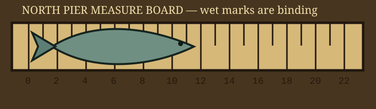

WET MARKS ARE BINDING — DO NOT MEASURE THE TAIL TWICE
The board hangs behind the office door during storms. When dry, it lives on two nails by the cleaning table. All measurements start at the chipped left corner, not at the painted zero, because the painted zero was added by someone optimistic.
Dispute process: lay fish flat, remove seaweed, call one clerk and one uninterested person. If the board rocks, repeat after placing the ferry schedule under the right foot.